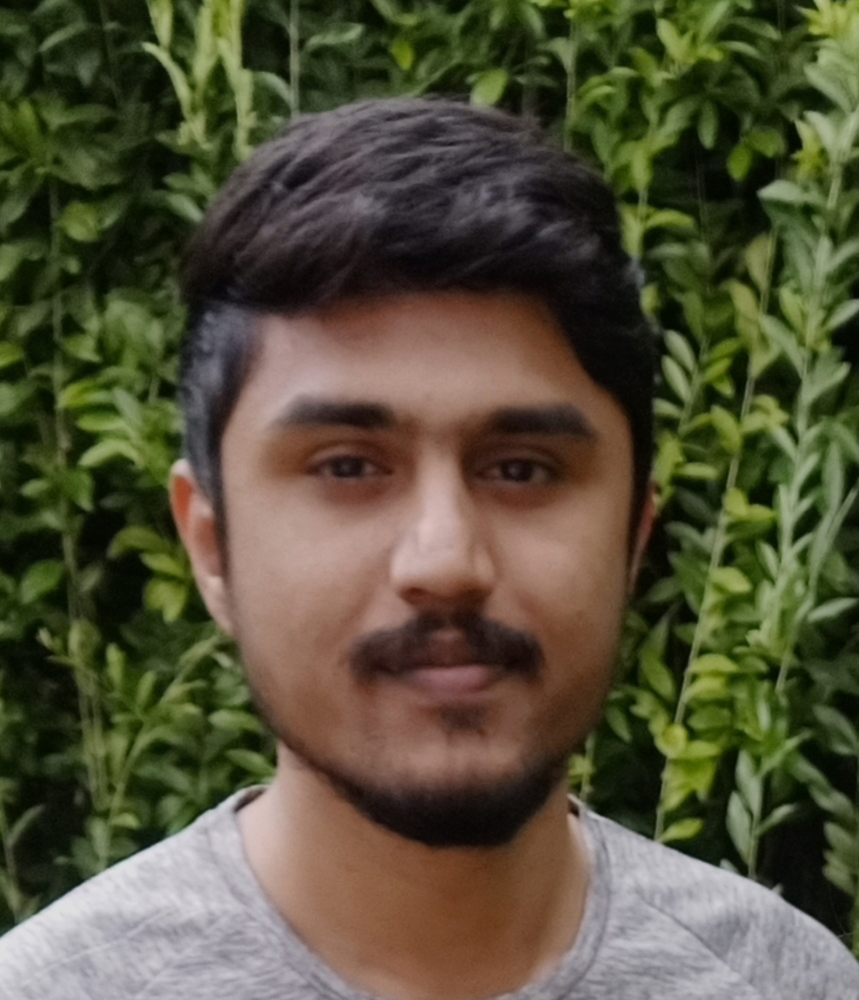

Madan Kumar M

Email address: m.madankumarq@gmail.com
Phone number: +91 8217788287
Address: Yaraganahalli, Mysore - 570011
Summary
Support engineer with 1.8 year esxperience in webhosting chat support looking for new challening opporutnites, with scope of learning new skills while effectively contributing to the organization.
Education
B.E
Have completed bachelor of enginngering from visveswaraya technological university with 7.25 CGPA in mechanical stream in 2019.
-
Class IX
Have completed preuniversity education from karnataka state board with 77.66% in 2015.
-
Class X
Have completed SSLC from karnataka state board with 76.00% in 2013.
Work experience
-
Support engineer
From Nov 2022 to Jul 2024 - Glowtouch technologies, mysore.
- Served as primary point of contact for Bluehost (Newfold Digital) web hosting chat
support, provided support to International users in 24/7 uptime environment, often
working in flexible shifts.
- Handling chats upto 4 concurrency, while maintaining 4.75 monthy CSAT score, 70% FCR
and AHT within 1800 seconds.
- Troubleshoot and solve wide range of web hosting related issues such as CMS
installation (wordpress), diagnosing common website HTTP error codes (4xx and 5xx),
email hosting, client configuration and troubleshooting, domain management and DNS
zone files configuration, FTP configuration, MySQL DB configuration, and other common
cPanel-based tasks.
- SSH configuration with applications like Putty, Mobaxterm and familiarity with basic
linux commands.
-
Customer retention, pitching sales to new contact, upgrade plans suggestion to existing
customers and achieving monthly sales target.
-
Graduate trainee
From Nov 2019 to Jun 2022 - Rane Madras Limited, mysore.
- Worked as graduate trainee in manufacturing engineering department, was handling new
product development (NPD) projects and PPAP documentation.
- Expeirence in Part drawings, jigs and fixture design using Autocad LT and UG NX
- Participated in kaizen projects, IATF, Inventory and OHES audits.
Skills
- Web and email hosting
- Customer service
- WHM and CPanel
- Domain and DNS mangement
Hobbies
- Jogging
- Cricket
- reading books
- Listening to music
Thank you!
© Madan. All rights reserved.